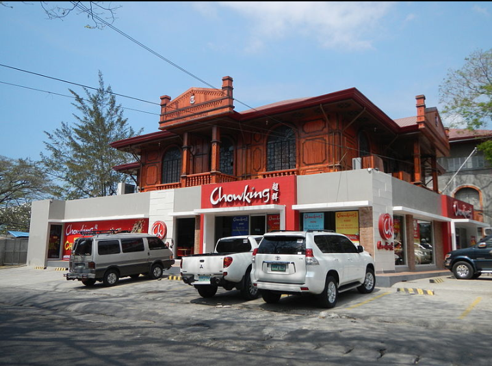

SAN JUAN TOURIST ATTRACTIONS
RED CLAY "PAGDAMILIAN"
Visitors have been discovering their artistic side while handling the dirt that they turn into mud, and into vessels which they could say they crafted on their own. "Damili" is an Ilokano term for molding clay into creative arts and crafts specially planting decorative purposes, storage of food, dry goods and waterpot.
MUSEO DE SAN JUAN/ MUSEO DE ILOKO
The old "presedencia" of Agoo artifacts annd other pieces of cultural importance to the Ilocanos.
SURF IN SAN JUAN
Urbiztondo Beach in San Juan is the most popular surfing spot and main tourist area. Aside from good swells, this is one of the reasons why it had become a popular destination for avid surfers and people who want to learn sport.
ST. JOHN THE BAPTIST CHURCH
This is located in McArthur Highway, San Juan and probably the most popular church in La Union. The unique architectural structure of the church is captivating. Aside from visita iglesia, it's also perfect for weddings and anniversary celebrations.
SANTO TOMAS TOURIST ATTRACTIONS
SUNGYOT ISLAND

SANTO TOMAS MARICULTURE PARK
Santo Tomas is proud of its Institute of Fisheries (fisheries and fishery education diploma courses about fisheries technology with major in different fields.
SHRINE OF NUESTRA SENORA DEL MAR CAUTIVA PARISH CHURCH
The natives are deeply religious as demonstrated by their devotion to the Senora Virgen del Mar cautiva (Virgin of the Sea, patron saint of the town fishermen, whose feast day is celebrated every 26th of April, at Poblacion.
AGOO-DAMORTIS PROTECTED LANDSCAPE AND SEASCAPE
Located on the eastern side of Lingayen Gulf in Southern La Union, Philippines. It was established in 2000 to protect 10,648.94 hectares of coastal area, including mangrove swamps, seagrass beds and stretches of fine black sand beaches.